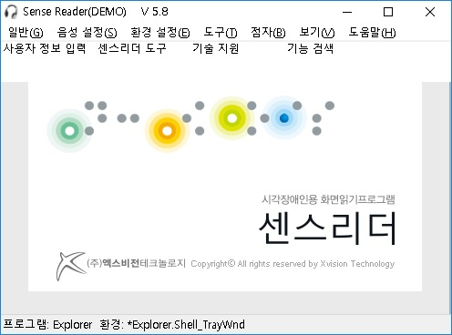

센스리더의 메뉴를 호출하거나 하위 메뉴로 이동하기 위해서는 다음과 같은 키가 사용 됩니다.

① 센스리더 윈도우를 활성화 합니다.
- <Ctrl-\(백슬래시)> 키를 누르거나 <Ctrl-Alt-S> 키를 누릅니다.
② 메뉴에 접근하기 위해서는 <Alt> 키를 누르거나 <F10> 키를 눌러 메뉴를 호출 합니다.
③ →(오른쪽 방향키), ←(왼쪽 방향키)를 이용하여 메뉴간 이동이 가능 합니다.
④ 원하는 메뉴로 접근한 경우 하위 메뉴로의 접근을 위해 ↑(위 방향키), ↓(아래 방향키)를 이용합니다.
⑤ 하위 메뉴로 접근하여 원하는 메뉴를 실행하고자 할 때에는 <Enter> 키를 누르면 됩니다.